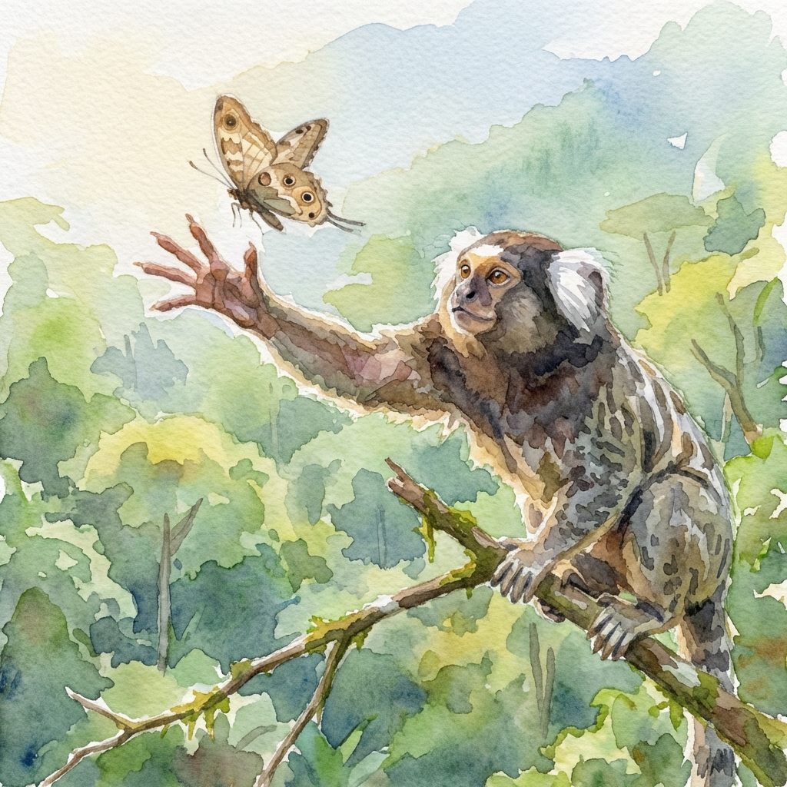

Center for Neurocomputation & Machine Intelligence
How brains control bodies.
I study the neural computations that turn intention into coordinated movement, bridging systems neuroscience, biomechanics and deep reinforcement learning to understand embodied control.
I'm an Associate Research Scientist in the Saxena Lab, in Yale's Department of Biomedical Engineering. I'm based at the Wu Tsai Institute's Center for Neurocomputation and Machine Intelligence, where my research asks how nervous systems generate flexible feedback driven behavior, and how we can model that control computationally.
I earned my PhD in Computational Neuroscience at the University of Chicago with Nicholas Hatsopoulos, where I built methods to study the neural control of natural behavior in freely moving marmosets. As a postdoc with Hatsopoulos and Jason MacLean, I recorded sensorimotor cortical population dynamics across the animals' full behavioral repertoire, from prey capture to sleep.

New Haven, CT
Whole-body biomechanical models driven by deep reinforcement learning, used to ask how neural control and body mechanics jointly produce natural behavior.
Large-scale recordings from sensorimotor cortex of freely moving marmosets, characterizing how population activity encodes movement across the full ethological repertoire.
Chronic wireless neural recording, markerless 3D pose estimation, and voluntary behavioral-training platforms that make rigorous study of unconstrained behavior possible.
† co-senior author